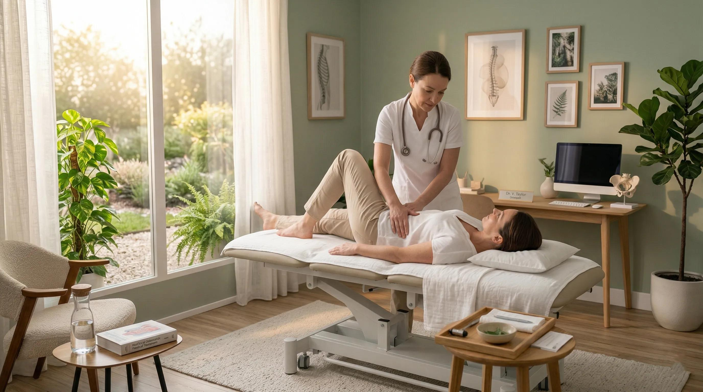
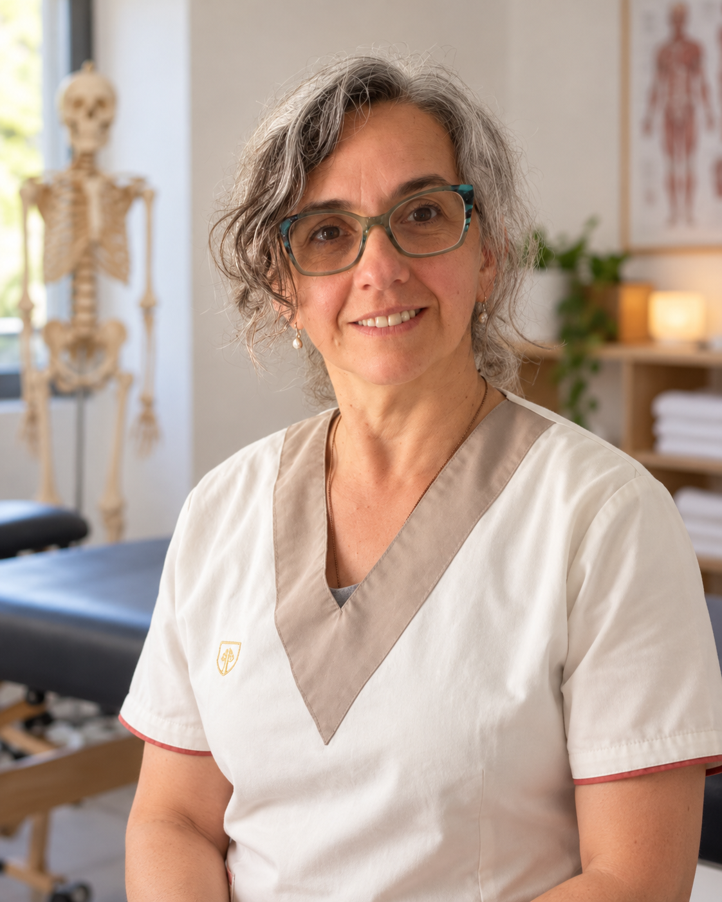

Osteopatía
Una mirada sobre la relación entre la estructura corporal, la función y el motivo de consulta.
San Luis, Argentina
2664 921564Atención profesional y cercana
Osteopatía y kinesiología para abordar cada consulta desde una evaluación profesional, clara y cercana.
Elegí un área de atención y consultá disponibilidad por WhatsApp


Sobre Gloria
Una consulta comienza por comprender qué necesitás y cómo se presenta hoy.
Gloria Seimandi desarrolla su práctica desde la osteopatía y la kinesiología, con una formación que integra el estudio del cuerpo y la actividad física.
Cada encuentro parte de una evaluación profesional y de la información relevante para orientar la consulta.
Áreas de atención
Conocé cada área y elegí la que mejor se relaciona con tu motivo de consulta.
Una mirada sobre la relación entre la estructura corporal, la función y el motivo de consulta.
Atención orientada al movimiento y la funcionalidad, de acuerdo con la evaluación profesional.
Turnos
Elegí el servicio y continuá tu consulta por WhatsApp.
Preguntas frecuentes
Encontrá respuestas rápidas sobre las áreas actuales y la forma de consultar disponibilidad.
Consultar disponibilidadElegí Osteopatía o Kinesiología en la sección de turnos. Luego se abrirá WhatsApp con tu consulta lista para enviar.
Actualmente podés consultar por Osteopatía o Kinesiología. Encontrarás una explicación breve de cada propuesta en la sección de atención.
La atención se realiza en San Luis, Argentina. Escribí por WhatsApp para recibir la información necesaria al coordinar tu turno.
Podés contar brevemente el motivo de tu consulta. Si tenés estudios o antecedentes relevantes, compartí esa información al coordinar para confirmar qué conviene llevar.
Para consultas generales, elegí el medio de contacto que te resulte más cómodo.